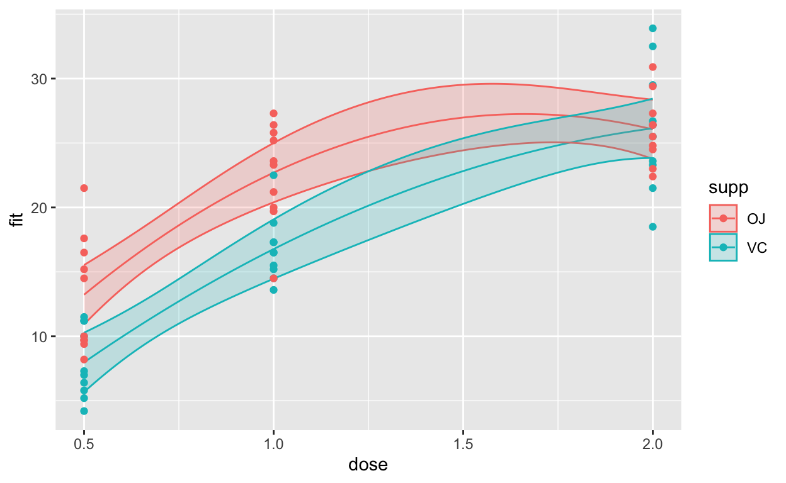

Overview
This tutorial looks at the ggplot2 package for \(\textsf{R}\) and is based on Andy Lin's Introduction to ggplot2 tutorial, used and adapted with permission of the author.
The ggplot2 package is a package for R which facilitates the creation of sophisticated layered statistical graphics. It uses an underlying grammar of graphics which allows graphs to be built up component-by-component as opposed to editing pre-made graphs or trying to create one big lump of code to format a graph. This approach allows individual aspects of a graph, such as the colour of one particular data series or the transparency of an overlay, to be easily varied independently of other aspects of a graph.
© Copyright 2018, 2021 UNSW Sydney. All rights reserved except where otherwise stated.
Installing and using ggplot2
For your own projects, if you're using RStudio the easiest way to install ggplot2 and the necessary dependencies is to use the Install button at the top of the Packages pane. Make sure the Install dependencies checkbox is ticked. Alternatively one can run install.packages("ggplot2") in the Console.
To load the ggplot2 library in the console make sure the checkbox next to the package name is ticked in the Packages tab.
To use ggplot2 in a project make sure you include library(ggplot2) in the code.
The following code, inserted at the start of a project, will check to see if ggplot2 is installed and stop if it is not installed with a warning:
if (!require("ggplot2", quietly=TRUE)) {
stop("The ggplot2 package does not appear to be installed.")
}This approach is only suitable if a small number of packages are needed as it doesn't scale very well to large number of packages. To manage many dependencies using a package management suite such as pacman is recommended. See https://cran.r-project.org/web/packages/pacman/vignettes/Introduction_to_pacman.html.
For this tutorial there is no need to install ggplot2 as it does it for you. This tutorial also uses some other packages which will also be automatically included:
- Hmisc
- dplyr
- tidyr
- lme4
- nlme
- datasets (builtin to recent versions of \(\textsf{R}\))
The tidyverse
The ggplot2 package is one component of the suite of packages called tidyverse designed for data science.
Although ggplot2 can be installed on its own, installing other packages from the tidyverse suite may be an option for some projects, including:
- dplyr: data management (e.g. filtering, selecting, sorting, processing by group)
- tidyr: tidying/restructuring data
- haven: reading data in other formats (Stata, SAS, SPSS)
- stringr: string variable processing
See the Tidyverse packages page for a full list. See also the IDRE R Data Management Seminar.
Online resources
There is comprehensive documentation for ggplot2 online at https://ggplot2.tidyverse.org/.
The ggplot2 websites goes into each function available in the package quite thoroughly. Each function's help file typically contains detailed code and graph examples.
The author of ggplot2, Hadley Wickham, has a book ggplot2: Elegant Graphics for Data Analysis, 2009, Springer, New York. This book is short (200 pages) but dense. The rendered book is not available for free but the Rmarkdown source for the book is available at https://github.com/hadley/ggplot2-book. You can clone this repository to your computer (in RStudio, create a new project using version control (git), paste the URL for the GitHub repo for the book into the dialogue box, then, once cloned, you can build the book for local reading using the instructions in the README file).
RStudio also has a very useful ggplot2 cheat sheet (click the thumbnail images below to download it, or see the complete list of RStudio cheet sheets for R).

Introduction: a grammar of graphics
The ggplot2 library produces layered statistical graphics using an underlying 'grammar of graphics' (the 'gg' bit) to build graphs component-by-component rather than providing less-flexible premade graph formats.
Simple graphs can be produced with very little knowlege of the underlying grammar but understanding the grammar will make use of ggplot2 even easier. Knowing the grammar will also allow us to conceive of and implement new and improved graphs. The grammar is easy to grasp.
ggplot2 allows the user to build a graph by adding concepts to a graph rather than specifying multiple long lists of options.
A grammar of a language defines the rules of structuring words and phrases into meaningful expressions. A grammar of graphics defines the rules of structuring data and aesthetic elements into a meaningful graph. Leland Wilkinson (2005) designed the grammar upon which ggplot2 is based.
The elements of the grammar are:
- data: variables mapped to aesthetic features of the graph.
- geoms: objects/shapes on the graph.
- stats: statistical transformations that summarise data, e.g. mean, confidence intervals
- scales: mappings of aesthetic values to data values. Legends and axes display these mappings.
- coordinate systems: the plane on which data are mapped on the graphic.
- faceting: splitting the data into subsets to create multiple variations of the same graph (paneling).
Let's work through these...
Data
Data for plotting with ggplot2 tools must be stored in a data.frame (or a tibble, which is the enhanced tidyverse version of the R data.frame, or an R object which can be treated like a data.frame, such as a tbl() reference to an external database table using the dbplyr package which we examined in the Chapter 1 interactive session).
Objects of class matrix cannot be used and will need to be converted to data.frame before plotting.
Multiple data frames may be used in one plot, which is an advantage over other graphing systems.
All datasets used in this seminar are loaded with the \(\textsf{R}\) packages used for this tutorial.
Let's start with the Milk dataset. The Milk dataset contains 1337 observations with the following 4 variables:
- protein: numeric, protein content of milk
- time: numeric, time since calving
- cow: an ordered factor, an identifier for the cow
- diet: a factor, the diet of the cow, with 3 levels:
barley,barley+lupins,lupins
Examine the first few rows of Milk using head():
head(Milk)Thus, with ggplot2, prior to plotting, data must be available as one or more data frames (or equivalents, see above) to be used. Because this tutorial is focussed on using ggplot2 and not the other aspects of data management and analysis, it won't focus on the cleaning and analysis steps that are part of this data preparation -- instead we will mostly use pre-prepared data frames.
There is a worked example at the end which goes into slightly more detail.
The ggplot() function
All graphics begin with specifying the ggplot() function
Note that although the name of the package is ggplot2, the name of the function is ggplot().
In the ggplot() function we specify the 'default' dataset and map variables to aesthetics (aspects) of the graph. By "default", we mean the dataset assumed to contain the variables specified. The first layer for any ggplot2 graph is an aesthetics layer.
We then add subsequent layers (of geoms, stats, &c.), producing the actual graphical elements of the plot.
In the ggplot() function below the data set we are using is Milk as given by the data argument.
An aside...
The first argument to `ggplot() is the data argument so specifying this as a named argument is not strictly necessary but it does make things more readable and helps protect against errors.
The second argument to ggplot() is an aes (aesthetics) object which specifies the aesthetic mappings to be used for the plot. Here
- the
Timevariable (column) fromMilkis mapped to the x-axis - the
proteinvariable is mapped to the y-axis
If you run this you will see that an empty plot is output!
# declare data and x and y aesthetics,
# but no shapes yet
ggplot(data = Milk, aes(x=Time, y=protein))This is the expected output of the above call. We have told ggplot() what data from the Milk data frame we wish to plot but we have not specified how we want it to appear.
ggplot2 is part of the tidyverse
An aside...
ggplot2 functions all work properly with other tidyverse packages, and thus the tidyverse/dplyr pipe (%>%) can be used to "pipe" the first argument into the ggplot() function, thus the code below is exactly equivalenet to the example code given above:
Milk %>% ggplot(aes(x=Time, y=protein))Aesthetics: aes()
Aesthetics are the visually perceivable components of the graph.
We map variables from the data frame to aesthetics using the aes() element.
For example, we can map:
- which variables appear on the x-axis and y-axis.
- a classification variable to colours
- a numeric variable to the size of graphical objects such as line width or data point size
Aesthetics that we specify are inherited by subsequent layers in our plot. The mappings specified in aes() in the ggplot() function serve as our defaults. They do not need to be respecified in subsequent layers.
Let's say that we want our data to be plotted as points in a scatterplot using geom_point(). From the ggplot2::geom_point documentation (use ?ggplot2::geom_point):
The point geom is used to create scatterplots. The scatterplot is most useful for displaying the relationship between two continuous variables. It can be used to compare one continuous and one categorical variable, or two categorical variables, but a variation like
geom_jitter(),geom_count(), orgeom_bin2d()is usually more appropriate.
# geom_point inherits x=Time, y=protein
ggplot(data = Milk, aes(x=Time, y=protein)) +
geom_point()Now we can see the data!
An aside...
Notice the syntax here:
- we create the plot object using
ggplot() - we add subsequent plot layers using
+
The result of the expression (plot + layer + layer + ...) is evaluated and when output we get a graph. We're seeing the graph here because the expression is being evaluated and output immediately in that same way that if we wrote 5 + 7 we'd get the result 12 immediately.
More on this later in the Layers section.
Additional aes() specifications for subsequent plot layers will override the default aesthetics for that layer only.
Let's add another layer to see this (notice our plot expression now has two layers plot + layer + layer). The color mapping from Diet given in aes(color=Diet) only applies to the geom_boxplot() layer but not to the points produced by the geom_point() layer.
# color=Diet only applies to geom_boxplot
ggplot(data = Milk, aes(x=Time, y=protein)) +
geom_point() +
geom_boxplot(aes(color=Diet))Please note that we are not suggesting that this chart (above) represents good visualisation practice -- in fact, as a chart, it is very poor, but we have created it to illustrate the principles of the ggplot2 grammar and syntax.
Which aesthetics are required and which are allowed depends on the particular geom being used.
Some example aesthetics:
x: positioning along x-axisy: positioning along y-axiscolor: colour of objects; for 2-d objects, the colour of the object's outline (compare to fill below)- notice the spelling
fill: fill colour of objectsalpha: transparency of objects, a value between 0 (transparent) and 1 (opaque)linetype: how lines should be drawn (solid, dashed, dotted, &c.)shape: shape of markers in scatter plotssize: how large objects appear
Mapping vs setting
If we want the aesthetic to vary as a variable changes value we map aesthetics to variables inside the aes() function. When mapped inside aes(), the aesthetic will vary as the variable varies.
Let's apply the change of colour to the scatterplot and remove the boxplot for now.
# color varies as Diet varies
ggplot(data = Milk, aes(x=Time, y=protein)) +
geom_point(aes(color=Diet))Notice now that the points in the geom_plot change colour according to diet.
If we set the value of an aesthetic attribute outside an aes() mapping, it gets set to a constant.
# map color to constant "green" outside of aes
ggplot(data = Milk, aes(x=Time, y=protein)) +
geom_point(color="green")Warning...
Setting an aesthetic to a constant within aes() can lead to unexpected results, as the aesthetic is then set to a default value rather than the specified value.
# Colour set to 'green' but appears as default default red-orange colour instead
ggplot(data = Milk, aes(x=Time, y=protein)) +
geom_point(aes(color="green"))Layers
Graphs in ggplot2 are built layer-by-layer, rather than being premade. As we have already seen, we add more layers with the + operator.
A layer consists of graphics produced by either a geom or stat element. We can add layers in a virtually unrestricted way, allowing us to customise our graphs as we see fit.
Remember that layers inherit default aesthetics from the ggplot() function, but they can be overridden for each layer.
For example, we could construct a graph that begins whose first layer is a scatterplot of Time vs protein:
ggplot(data = Milk, aes(x=Time, y=protein)) +
geom_point()Then add a layer of of line graphs connecting Time vs Protein by cow (Notice that we added the aesthetic group=cow)
ggplot(data = Milk, aes(x=Time, y=protein)) +
geom_point() +
geom_line(aes(group=Cow))And finally, end with a layer which adds a smoothed estimate of the mean relationship:
ggplot(data = Milk, aes(x=Time, y=protein)) +
geom_point() +
geom_line(aes(group=Cow)) +
geom_smooth()These example tell us two things:
- ggplot2 is very flexible
- just because you can do something doesn't mean you should do something
An aside...
These plots communicate something but they're not communicating anything about Milk particularly well with that layer of line graphs creating a complete visual mess. They are poor plots in that regard.
In conjunction with the source code they are communicating that ggplot2 is very flexible.
Plot objects
As mentioned in a previous section, we have been creating a plot object and adding layers to create new, more complex, plot objects. The end result is a plot once the expression is output.
We can store these plot objects in a variable to make our code more compact when we're doing complex plots.
Notice the plot isn't generated until the 'value' of the variable holding the plot is output. The code below will generate no output until p is output. Try running it unmodified and then add a p to output the plot and run it again
p <- ggplot(data = Milk, aes(x=Time, y=protein)) +
geom_point()p <- ggplot(data = Milk, aes(x=Time, y=protein)) +
geom_point()
pCompare this to an analogous sitution with integers. If we evaluate 5 + 7 we get 12:
5 + 7If, however, we store that in a variable, we get no output (running this example will assign 12 to p but result in no output):
p <- 5 + 7But now that the value is in p we can evaluate p to get the result:
p <- 5 + 7
pA plot is generated when the 'value' of the plot expression is evaluated and output.
So, we would expect the following code to produce two plots:
p <- ggplot(data = Milk, aes(x=Time, y=protein)) +
geom_point()
p
p + geom_boxplot(aes(color=Diet))Try commenting out the final two lines one at a time to see which is generating each plot.
This lets us create a base plot and then add different layers. Let's use this as the base plot:
p <- ggplot(data = Milk, aes(x=Time, y=protein)) +
geom_point()Let's generate a plot with a smooth mean
p + geom_smooth()and another faceted by Diet (split the data by Diet and produce multiple plots)
p + facet_wrap(. ~ Diet)Of course, these are plot expressions as well and can be stored for later use. Notice here we're storing them and then outputting them in a different order.
base_plot <- p
facetted_plot <- base_plot + facet_wrap(. ~ Diet)
max_protein_by_time <- nlme::Milk %>% group_by(Time) %>% summarise(protein=max(protein))
facetted_plot + geom_smooth()
base_plot + geom_line(data=max_protein_by_time, color="Red")An aside...
We've been a bit fancy here with the geom_line: we've generated a new data set (using dplyr) which has the maximum protein for each Time value and used that explicitly as the data frame for the geom_line. We'll examine this again in the worked example.
So, again, a reminder:
A plot is generated when the 'value' of the plot expression is evaluated and output.
Geoms
The geom functions differ in the geometric shapes produced for the plot:
geom_bar(): bars with bases on the x-axisgeom_boxplot(): boxes-and-whiskersgeom_errorbar(): T-shaped error barsgeom_histogram(): histogramgeom_line(): linesgeom_point(): points (scatterplot)geom_ribbon(): bands spanning y-values across a range of x-valuesgeom_smooth(): smoothed conditional means, e.g. loess smooth
Each geom is defined by aesthetics required for it to be rendered. For example, geom_point() requires both x and y, the minimal specification for a scatterplot.
Geoms differ in which aesthetics they accept as arguments. For example, geom_point() understands and accepts the aesthetic shape, which defines the shapes of points on the graph. In contrast, geom_bar() does not accept shape.
Check the geom function help files for required and understood aesthetics.
Let’s take a look at some commonly used geoms.
Geoms requiring only x
Geoms that require only the x aesthetic be specified are often used to plot the distribution of a single, continuous variable.
We’ll first map the variable protein to the x-axis in ggplot(), save this specification in an object, and then we’ll subsequently add geom layers.
# define data and x for univariate plots
univariate_base <- ggplot(Milk, aes(x=protein))Histograms
Histograms plot distributions of continuous variables. Remember that geom_histogram() will be inheriting aes(x=protein) from univariate_base.
# histogram
univariate_base + geom_histogram()Density plots
Density plots are effectively smoothed out histograms (using a kernel function, which we won't go into here).
# density plot
univariate_base + geom_density()Bar plots
While histograms and density plots are used to display the distributions of continuous variables, bar plots are often used to display distributions of categorical/discrete variables.
geom_bar() by default produces a bar plot with counts of each x-value, thus the base graph has been changed to use Diet for x:
# bar graph
ggplot(Milk, aes(x=Diet)) + geom_bar()Geoms that require more than x
Plots of more than one variable are typically more interesting. Let’s look at some geoms that map variables to both the x and y aesthetics.
Let's change the base graph to one with Time mapped to the x-axis and protein to the y-axis.
xy_base <- ggplot(Milk, aes(x=Time, y=protein))Scatter plots
Let's add a scatterplot layer with geom_point(). You should be familiar with this one by now:
# scatterplot
xy_base + geom_point()Smoothed means
Here is just the smoothed mean, in this case, without the scatterplot:
# smooth mean
xy_base + geom_smooth()Of couse, layering lets us put both on the same graph as we have been doing:
xy_base + geom_point() + geom_smooth()Try xy_base + geom_smooth() + geom_point() and examine the difference when the layers are reordered. You can just edit and re-run the code in the code box above. It might help if you make the points of the scatter plot a different colour by adding color="Red"
Graphics by group
Often, we want to produce separate graphics by a grouping variable, all overlaid on the same group.
One way to graph by group is to use the group aesthetic. Below, we create line graphs of Time vs protein, individually by Cow. Each line represents the many measurements across time of a single cow. The result is a mess!
# lines of protein over Time by group=Cow
xy_base + geom_line(aes(group=Cow))geom_line() connects points in the order in which they appear on the x-axis. We usually need to use the group aesthetic for geom_line() because otherwise, a single, nonsensical line graph of the entire dataset will be created as we see below when group is omitted:
xy_base + geom_line()Mapping variables to most other aesthetics besides x and y will implicitly group the graphics as well.
For example, we can group the data into lines by Cow by colouring them (instead of using group=Cow), but that's not very useful either:
# lines of protein over Time coloured by Cow
xy_base + geom_line(aes(color=Cow))Let's try lines by Cow, but then grouped by Diet using color. This grouping would potentially allow us to see if the trajectories of protein over time differed by Diet.
# lines of protein over Time by Cow coloured by Diet
xy_base + geom_line(aes(group=Cow, color=Diet))or instead of color we could map Diet to linetype:
# lines of protein over Time by Cow coloured by Diet
xy_base + geom_line(aes(group=Cow, linetype=Diet))OK, none of those are very good! But they illustrate the flexibility of ggplot2, and the fact that trial-and-error and experimentation is sometimes required to arrive an an effective visualisation.
Stats
The stat functions statistically transforms data, usually as some form of summary. For example:
- frequencies of values of a variable (histogram, bar graphs)
- a mean
- a confidence limit
Each stat function is associated with a default geom, so no geom is required for shapes to be rendered. The geom can often be respecified in the stat for different shapes.
stat_bin()
The stat_bin() stat transforms a continuous variable mapped to x into bins (intervals) of counts. Its default geom is geom_bar(), producing a histogram. (Remember, our univariate_base has protein mapped to x)
# stat_bin() produces a bar graph by default
univariate_base + stat_bin()Respecifying the geom to geom=line changes how the statistical transformation is depicted.
# a line instead of bars
univariate_base + stat_bin(geom="line")Note that the geom is just specified as "line" not geom_line().
stat_summary()
stat_summary() applies a summary function (e.g. mean) to y at each value or interval of x.
The default summary function is mean_se, which returns the mean ± standard error. Thus, stat_summary() plots the mean and standard errors for y at each x value.
The default geom is geom_pointrange(), which places a dot at the mean of y (for that x) and extends lines to mean ± s.e.
Let's plot means and standard errors of protein (mapped to y), at each Time (mapped to x) using the default geom geom_pointrange().
# plot mean and standard error of protein at each Time
xy_base + stat_summary()You might recognise this shape. Add a geom_smooth() to the plot below. You will want to think about the order of the layers.
xy_base + stat_summary()xy_base + geom_smooth() + stat_summary()Exploring data graphically is easy with ggplot2.
Using other summary functions and geoms with stat_summary()
Generally, functions that accept continuous numeric variables (e.g. mean, var, user-written) can be specified in stat_summary(), either with argument fun.data or fun.
The ggplot2 package conveniently provides additional summary functions adapted from the Hmisc package, for use with stat_summary(), including:
mean_cl_boot: mean and bootstapped confidence interval (default 95%)mean_cl_normal: mean and Gaussian (t-distribution based) confidence interval (default 95%)mean_dsl: mean plus or minus standard deviation times some constant (default constant=2)median_hilow: median and outer quantiles (default outer quantiles = 0.025 and 0.975)
It is not necessary to load the Hmisc package into the R session to use these functions, but it is necessary if we want to view their help files.
If the new summary function returns 1 value (e.g. mean, var), use argument fun and a geom that requires only a single y input (e.g. geom_point, geom_line).
# median returns 1 value but geom_pointrange expects 2 (high, low)
# so change the geom to point
xy_base + stat_summary(fun="median", geom="point")If the function resturns 3 values, such as the mean and 2 limits (e.g. mean_sem, mean_cl_normal) use fun.data.
# mean and boostrapped confidence limits
xy_base + stat_summary(fun.data="mean_cl_boot")We can even define our own functions:
# we define our own function mean of log, which only returns 1 value,
# so we also change geom to line
meanlog <- function(y) {
mean(log(y))
}
xy_base + stat_summary(fun=meanlog, geom="line")Notice our y axis is mislabelled now. The y values are log(protein) now not protein. The scale ylab("label") sets the y axis label to label (we'll look more at scales in a moment). Add a scale to change the y label to log(protein).
# we define our own function mean of log, which only returns 1 value,
# so we also change geom to line
meanlog <- function(y) {
mean(log(y))
}
xy_base + stat_summary(fun=meanlog, geom="line")# we define our own function mean of log, which only returns 1 value,
# so we also change geom to line
meanlog <- function(y) {
mean(log(y))
}
xy_base + stat_summary(fun=meanlog, geom="line") + ylab("log(protein)")Scales
Scales define how aesthetic values are mapped to data values.
The ggplot2 package usually allows the user to control the scales for each aesthetic. Look for scale functions called something like scale_aesthetic_manual() (where aesthetic is replaced with a particular aesthetic attribute) to specify exactly which visual elements will appear on the graph.
The default shape scale will map Diet values "barley" to circle, "barley+lupins" to triangle, and "lupins" to square symbols:
ggplot(Milk, aes(x=Time, y=protein, shape=Diet)) +
geom_point()Of course, we could combine this with varying the colour by Diet as well. Add an argument to map Diet to colour as well in the aes():
ggplot(Milk, aes(x=Time, y=protein, shape=Diet)) +
geom_point()ggplot(Milk, aes(x=Time, y=protein, shape=Diet, color=Diet)) +
geom_point()Shape scales give us control over which symbols correspond to which values. A different shape scale could map the Diet values to diamond, plus, and asterisk symbols. Below we use shape_scale_manual() to specify the numeric codes corresponding to those shpaes. For a list of those codes, see the bottom of the scale_shape() manual page.
ggplot(Milk, aes(x=Time, y=protein, shape=Diet)) +
geom_point() +
scale_shape_manual(values=c(5, 3, 8))We can even supply our own shapes for plotting, here the characters 'B', 'M', and 'L':
ggplot(Milk, aes(x=Time, y=protein, shape=Diet)) +
geom_point() +
scale_shape_manual(values=c("B", "M", "L"))An aside...
The table of shape symbols is produced by the code below.
You should have enough of an understanding of ggplot2 to work how the code results in the chart.
Some things it might help to know:
scale_shape_identity()is used when the data is already aesthetic values ggplot2 can understand. In this case ourshapevariable in thedf_shapesdata frame contains the shape ids we want to usefacet_wrap(. ~ shape)creates a sub-plot for each value ofshapetheme_voidturns off all the decoration like axis labels and guidelines
# Show a list of available shapes
df_shapes <- data.frame(shape = 0:24)
ggplot(df_shapes, aes(0, 0, shape = shape)) +
geom_point(aes(shape = shape), size = 5, fill = 'red') +
scale_shape_identity() +
facet_wrap(. ~ shape) +
theme_void()Notice that some of the shapes are solid (they only use the line colour) while others are filled (they also use the fill colour).
Try taking the theme_void() off the end (don't forget to remove the + before it on the previous line as well). It will look messy but it will clearly show the different sub-plots. You'll also be able to see that each shape is being plotted at the origin of each sub-plot because of the explicit data we are specifying for x and y: 0 and 0.
Colour scale functions
As colour is an important marker of variation in graphs, ggplot2 provides many scale functions designed to make controlling colour scales simpler.
A note about colour
Colour is a powerful tool for differentiating in plots.
Colour is also one of the harder attributes to use well.
The meaning of colour can be informed by culture:
- a 'safe' colour in one culture might indicate 'danger' in another culture
- a 'neutral' colour in one culture might indicate 'death' in another culture
In addition, there are many different types of colour-blindness which affect people of different backgrounds and phenotypic sex differently.
| Males | Females | |
|---|---|---|
| Dichromacy | 2.4% | 0.03% |
| Protanopia (red deficient: L cone absent) | 1.3% | 0.02% |
| Deuteranopia (green deficient: M cone absent) | 1.2% | 0.01% |
| Tritanopia (blue deficient: S cone absent) | 0.001% | 0.03% |
| Anomalous trichromacy | 6.3% | 0.37% |
| Protanomaly (red deficient: L cone defect) | 1.3% | 0.02% |
| Deuteranomaly (green deficient: M cone defect) | 5.0% | 0.35% |
| Tritanomaly (blue deficient: S cone defect) | 0.0001% | 0.0001% |
For our examples here, we will use scales for fill colours to adjust which three colours are mapped to the three values of Diet:
scale_fill_hue(): evenly spaced hues, default used for factor variablesscale_fill_brewer(): sequential, diverging or qualitative colour schemes, originally intended to display factor levels on a map.
The function scale_fill_brewer() pulls its colour from the website ColorBrewer, which provides premade colour palettes desinged to show contrast among discrete values.
The plots are densities of protein for each Diet group. Let's set up our base graph:
dDiet <- ggplot(Milk, aes(x=protein, fill=Diet)) +
geom_density(alpha=1/3) # makes all colours semi-transparentdDiet <- ggplot(Milk, aes(x=protein, fill=Diet)) +
geom_density(alpha=1/3) # makes all colours semi-transparentHere are four fill colour scales produced by the above two functions.
First the default colour scale.
# the default is scale_fill_hue, would be the same if omitted
dDiet + scale_fill_hue()As noted, scale_fill_hue() is the default. Try taking it out and running the code again, you should get the same plot.
# the default is scale_fill_hue, would be the same if omitted
dDiet + scale_fill_hue()Let's try a 'qualitative' scale using scale_fill_brewer().
# a qualitative scale for Diet in scale_fill_brewer
dDiet + scale_fill_brewer(type="qual")And finally a 'divergent' scale using scale_fill_brewer().
# a divergent scale for Diet in scale_fill_brewer
dDiet + scale_fill_brewer(type="div")Setting axis limits and labelling scales
Earlier we used ylab to change the label of the y axis.
Axes visualise the scales for the aesthetics x and y. To adjust the axes use:
lims,xlim,ylim: to set axis limitsexpand_limits: to extend limits of scales for various aetheticsxlab,ylab,ggtitle,labs: to give labels (titles) to the x-axis, y-axis, or graph as a whole;labscan set labels for all aesthetics and title in one go
Let's return to our familiar plot of protein versus Time.
ggplot(Milk, aes(x=Time, y=protein)) +
geom_point()Let's use lims() to restrict the range of the two axes and use labs() to relabel them.
# notice the restricted ranges of x-axis and y-axis
ggplot(Milk, aes(x=Time, y=protein)) +
geom_point() +
lims(x=c(5, 10), y=c(3, 4)) +
labs(x="Weeks", y="Protein Content")Guides
Guides (axes and legends) visualise a scale, displaying data values and their matching aesthetic values. The x-axis, a guide, visualises the mapping of data values to position along the x-axis. A colour scale guide (legend) displays which colours map to which data values.
Most guides are displayed by default. The guides() function sets and removes guides for each scale.
Add guides(shape="none") to the following plot to remove remove the shape scale legend.
# base plot with Diet mapped to shape
ggplot(Milk, aes(x=Time, y=protein, shape=Diet)) +
geom_point()# notice no legend on the right anymore
ggplot(Milk, aes(x=Time, y=protein, shape=Diet)) +
geom_point() +
guides(shape="none")Coordinate systems
Coordinate systems define the planes on which objects are positioned in space on the plot. Most plots use Cartesian coordinate systems. All the plots in the seminar use the Cartesian coordinate system. Nevertheless, ggplot2 provides multiple coordinate systems, including polar, flipped Carteisan and map projections.
Facetting (panelling)
We can split plots into small multiples (panels) with the faceting functions, facet_wrap() and facet_grid(). The resulting graph shows how each plot varies along the faceting variable(s).
facet_wrap() wraps a ribbon of plots into a multirow panel of plots. The number of rows and columns can be specified Multiple faceting variables can be separated using+`.
Let's look at the densities of protein, coloured by Diet, faceted by Time.
Take the plot without facets and add facet_wrap(. ~ Time) to facet by Time.
# densities of protein, coloured by Diet
ggplot(Milk, aes(x=protein, color=Diet)) +
geom_density()# densities of protein, coloured by Diet, faceted by Time
ggplot(Milk, aes(x=protein, color=Diet)) +
geom_density() +
facet_wrap(. ~ Time)facet_grid() allows direct specification of which variables are used to split the data/plots along the rows and columns. Put the row-splitting variable before ~, and the column-splitting variable after. A . specifies no faceting along that dimension.
# split rows by Diet, no splitting along columns
ggplot(Milk, aes(x=Time, y=protein)) +
geom_point() +
facet_grid(Diet ~ .)Try replacing facet_grid(Diet ~. )with facet_grid(. ~ Diet) and see what happens.
Themes
Themes control elements of the graph not related to the data. For example:
- the background colour
- the size of fonts
- gridlines
- the colour of labels
These data-independent graph elements are known as theme elements.
A list of theme elements can be found on the tidyverse theme reference page for ggplot2.
Each theme element can be classified as one of three basic elements:
- a line,
- a rectangle, or
- text.
Each basic element has a corresponding element_ function that allows control over graphical aspects of that element:
element_line(): can specify coluor, size, linetype, &c.element_rect(): can specify fill, colour, size, &c.element_text(): can specify family, size, colour, &c.element_blank(): removes theme elements from graph
For example, the visual aspects of the x-axis can be controlled with element_line(), in which we can change the colour, width, and linetype of the x-axis. On the other hand, the background of the graph can be controlled with element_rectangle(), in which we can specify the fill colour, the border colour, the size of the background.
Set a graphical element to element_blank() to remove it from the graph.
Within the theme() function, we set the properties of theme elements by specifying the arguments of the element_ functions.
For example, the theme element corresponding to the background of the graph is panel.background, and its properties are set using the basic element function element_rect(). We can adjust the background's fill colour, border colour, and size in element_rect(). All of this will be specified within a call to theme().
Below change the fill colour of the background to 'lightblue' using a call to theme() and setting to the panel.background arguments to an element_rect() with a fill of "lightblue".
pt <- ggplot(Milk, aes(x=Time, y=protein)) +
geom_point()# default background
pt
# light blue background
pt + theme(panel.background=element_rect(fill="lightblue"))Now specify the x-axis title, a text theme element, to be size=20 (in points) and red.
pt + theme(panel.background=element_rect(fill="lightblue"))pt + theme(panel.background=element_rect(fill="lightblue")) +
theme(axis.title.x=element_text(size=20, color="red"))Theme elements can be removed by setting them to element_blank(). Let's remove y-axis title.
pt + theme(panel.background=element_rect(fill="lightblue"),
axis.title.x=element_text(size=20, color="red"))pt + theme(panel.background=element_rect(fill="lightblue"),
axis.title.x=element_text(size=20, color="red"),
axis.title.y=element_blank())Saving plots to files
ggsave() makes saving plots easy. The last plot displayed is saved by default, but we can also save a plot stored to an R object.
ggsave() attempts to guess the device to use to save the image from the file extension, so use a meaningful extension. Available devices include:
- eps/ps
- tex (pictex)
- jpeg
- tiff
- png
- bmp
- svg
- wmf
The dimensions of the image can be specified as well.
Change the filename in the call to ggsave() below to specify where you want to save your file (the example code saves it as a file called myplot.png in your home folder) and save it. Find the file and view it to check it has our familiar plot it in.
p <- ggplot(Milk, aes(x=Time, y=protein)) + geom_point()
ggsave("~/myplot.png", plot=p, width=7, height=5, units="cm")Worked example: ToothGrowth
This example illustrates how ggplot2 can be used at all stages of data analysis including data exploration, model diagnostics, and reporting of model results.
The ToothGrowth dataset loads with the datasets package.
The data are from an experiment examining how vitamin C dosage delivered in 2 different methods predicts tooth growth in guinea pigs. The data consist of 60 observations, representing 60 guinea pigs, and 3 variables:
len: numeric, tooth lengthsupp: factor, supplement type, 2 levels,VCis ascorbic acid, andOJis orange juicedose: numeric, dose (mg/day)
For this study, we treat len as the outcome, and supp and dose as the predictors.
Below we examine the structure of the dataset, and then using unique(), we see that three doses were used, 0.5, 1.0, and 2.0.
# look at ToothGrowth data
str(ToothGrowth)
# find unique doses
unique(ToothGrowth$dose)It's recommended to graphically explore a dataset before beginning statistical modeling. In particular, familiarise yourself with distributions of individual variables as well as joint distibutions or relationships among groups of variables.
To be clear, this is not a recommendation to formulate your statistical model based on graphical exploration of the data, as it is generally unwise to generate a model for a population based upon the characteristics of a single sample of that population. However, knowing more about variation in your data will help you interpret and identify problems in your statistical models.
We begin our exploration of Toothgrowth by examining the distributions of supp and dose, our predictors. Since both variables are discretely distributed, we want the frequencies (counts) of each value for both variables.
Frequencies are often plotted as bars, so we use geom_bar() to visualise.
We can of course produce bar graphs of supp and dose separately, like so:
# bar plots of supp and dose
ggplot(ToothGrowth, aes(x=supp)) + geom_bar()
ggplot(ToothGrowth, aes(x=dose)) + geom_bar()Even better would be to show the joint distribution of supp and dose, i.e. how dose is distributed at each supp (or vice versa). So we want distributions of dose, grouped by supp. We can group by supp on a graph by colouring by supp.
For bar geoms, the color aesthetic controls the border colour of the bar, while the fill aesthetic controls the inner colour.
# bar plot of counts of dose by supp
# data are balanced, so not so interesting
ggplot(ToothGrowth, aes(x=dose, fill=supp)) + geom_bar()Now we can see that the distribution of dose is balanced across both supp types. Thus, supp and dose are uncorrelated, as will be their effects on len.
Statistical models often make assumptions about the distribution of the outcome (or its residuals), so an inspection might be wise. First let's check the overall distribution of len with a density plot:
# density of len
ggplot(ToothGrowth, aes(x=len)) + geom_density()We can get densities of len by supp by mapping supp to color:
# density of len by supp
ggplot(ToothGrowth, aes(x=len, color=supp)) + geom_density()The outcome distributions appear a bit skewed, but the samples are small.
Recall that the purpose of the study was to see how dose predicts length (len) across two supplement types, orange juice and vitamin C. We plan to use linear regression to model this.
To preview, we can create a scatter plot of the dose-tooth length (len) relationship.
Let's start by saving the base graph in a variable and work from there:
tp <- ggplot(ToothGrowth, aes(x=dose, y=len))# not the best scatterplot
tp + geom_point()This is not the best scatterplot. Because dose takes on only 3 values, many points are crowded in 3 columns, obscuring the shape of relationship between dose and len. Let's replace the column of points at each dose value with its mean and standard error bars using stat_summary() instead of geom_point().
# mean and cl of len at each dose
tp.1 <- tp + stat_summary()
tp.1An additional call to stat_summary() with fun=mean (we use fun because mean returns one value) and changing the geom to "line" adds a line between means.
tp <- ggplot(ToothGrowth, aes(x=dose, y=len))
tp.1 <- tp + stat_summary()# add a line plot of means to see dose-len relationship
tp.2 <- tp.1 + stat_summary(fun="mean", geom="line")
tp.2That graph appears a bit non-linear.
Let’s examine whether the dose-len relationship varies by supp. We can specify new global aesthetics with a new aes() layer, which will override the default aesthetics specified in the orginal ggplot() function.
Mapping supp to the color aesthetic will vary the colour of geom_point() symbols and geom_line() lines.
tp <- ggplot(ToothGrowth, aes(x=dose, y=len))
tp.1 <- tp + stat_summary()
tp.2 <- tp.1 + stat_summary(fun="mean", geom="line")# all plots in tp.2 will now be coloured by supp
tp.2 + aes(color=supp)This graph suggests:
- The slope of the
dose-response curve is not constant acrossdosefor bothsupptypes, suggesting a non-linear function. - The shape of the curves looks somewhat different between
supp - At lower doses,
OJtends to be associated with longer lengths thanVC, but this difference disappears at higher doses
We just plotted means and confidence limits of len, with lines connecting the means, separated by supp, all without any manipulation to the original data!
The stat_summary() function facilitates looking at patterns of means, just as regression models do.
Next we fit our linear regression model and check model assumptions with diagnostic graphs.
Linear regression model
Imagine that before looking at these exploratory graphs, we hypothesised that dose has a linear relationship with tooth length (len) and that the linear function might be moderated by supplement type (supp).
We will use lm() to run this regression model.
model_lin <- lm(len ~ dose * supp, data=ToothGrowth)
summary(model_lin)##
## Call:
## lm(formula = len ~ dose * supp, data = ToothGrowth)
##
## Residuals:
## Min 1Q Median 3Q Max
## -8.2264 -2.8462 0.0504 2.2893 7.9386
##
## Coefficients:
## Estimate Std. Error t value Pr(>|t|)
## (Intercept) 11.550 1.581 7.304 1.09e-09 ***
## dose 7.811 1.195 6.534 2.03e-08 ***
## suppVC -8.255 2.236 -3.691 0.000507 ***
## dose:suppVC 3.904 1.691 2.309 0.024631 *
## ---
## Signif. codes: 0 '***' 0.001 '**' 0.01 '*' 0.05 '.' 0.1 ' ' 1
##
## Residual standard error: 4.083 on 56 degrees of freedom
## Multiple R-squared: 0.7296, Adjusted R-squared: 0.7151
## F-statistic: 50.36 on 3 and 56 DF, p-value: 6.521e-16The model results suggest that tooth length (len) increases with dose and that supplement (supp) moderates this relationship.
Diagnostic graph: residuals vs fitted
Validity of the inferences drawn from a statistical model depend on the plausibility of the model assumptions. Diagnostic graphs allow us to assess these assumptions, which are often untestable.
First we assess the assumptions of homoscedasticity, or constant error variance, and linear relationships between the outcome and predictors. A residuals vs fitted (predicted value) plot assesses both of these assmuptions. To make this plot, we'll need fitted (predicted) values and residuals
# add model fitted values and residuals to dataset
ToothGrowth$fit <- predict(model_lin)
ToothGrowth$res <- residuals(model_lin)ToothGrowth <- datasets::ToothGrowth
model_lin <- lm(len ~ dose * supp, data=ToothGrowth)
ToothGrowth$fit <- predict(model_lin)
ToothGrowth$res <- residuals(model_lin)Now we are ready to make the graph, layer-by-layer
- First specify aesthetics in ggplot(), where we map
fittox,restoy, andsupptocolor - A geom_point() scatter plot layer
- A geom_smooth() layer to visualise the trend line with
An even spread of residuals around 0 suggests homoscedasticity, and a zero, flat trend line suggests linearity of predictor effects.
ggplot(ToothGrowth, aes(x=fit, y=res, color=supp)) + ...ggplot(ToothGrowth, aes(x=fit, y=res, color=supp)) +
geom_point() + ...ggplot(ToothGrowth, aes(x=fit, y=res, color=supp)) +
geom_point() +
geom_smooth()We have suppressed several warnings regarding singularities, likely arising due to the sparsity of the data along the x-dimension.
Nevertheless, we see that the trend lines are clearly not flat, suggesting non-linear effects of dose, perhaps for both supplement types. Our exploratory graphs support this.
At this point, we have to decide whether we believe the non-linear relationship is true of the population or particular to this sample.
Regarding homoscedasticity, the data points do not look particularly more scattered at any fitted value or supplement type, so this assumption seems plausible.
Modeling a quadratic dose effect
Because it seems plausible that increasing dose would have diminishing returns, let’s try modeling a quadratic effect. We create a dose-squared variable, for use in the quadratic model and prediction later.
Then we run the new regression model, with linear and quadratic dose terms interacted with supp. We then show that the quadratic model has a signficantly lower AIC, indicating superior fit to the data, and then finally output the model coefficients:
# create dose-squared variable
ToothGrowth$dosesq <- ToothGrowth$dose ^ 2
# model with linear and quadratic effects interacted with supp
model_quad <- lm(len ~ (dose + dosesq)*supp, data=ToothGrowth)
AIC(model_lin, model_quad)summary(model_quad)##
## Call:
## lm(formula = len ~ (dose + dosesq) * supp, data = ToothGrowth)
##
## Residuals:
## Min 1Q Median 3Q Max
## -8.20 -2.72 -0.27 2.65 8.27
##
## Coefficients:
## Estimate Std. Error t value Pr(>|t|)
## (Intercept) -1.433 3.847 -0.373 0.710911
## dose 34.520 7.442 4.638 2.27e-05 ***
## dosesq -10.387 2.864 -3.626 0.000638 ***
## suppVC -2.113 5.440 -0.388 0.699208
## dose:suppVC -8.730 10.525 -0.829 0.410492
## dosesq:suppVC 4.913 4.051 1.213 0.230460
## ---
## Signif. codes: 0 '***' 0.001 '**' 0.01 '*' 0.05 '.' 0.1 ' ' 1
##
## Residual standard error: 3.631 on 54 degrees of freedom
## Multiple R-squared: 0.7937, Adjusted R-squared: 0.7746
## F-statistic: 41.56 on 5 and 54 DF, p-value: < 2.2e-16Although the individual interaction coefficients are not signficiant, they are jointly significant (checked via likelihood ratio test, not shown).
Let's redo the residuals vs fitted plot for the quadratic model:
# get fitted values and residuals, quad model
ToothGrowth$fit_q <- predict(model_quad)
ToothGrowth$res_q <- residuals(model_quad)
# residuals vs fitted again
ggplot(ToothGrowth, aes(x=fit_q, y=res_q, color=supp)) +
geom_point() +
geom_smooth()## `geom_smooth()` using method = 'loess' and formula 'y ~ x'The trend lines appear flat.
An aside...
If warnings regarding singularites are worrisome we can try an alternative residuals vs fitted plot without a loess smooth. We simply replace the geom_point() and geom_smooth() layers with a stat_summary() layer, which will plot the mean and standard errors of the residuals at each fitted value:
# means and standard errors of residuals at each fitted value
ggplot(ToothGrowth, aes(x=fit_q, y=res_q, color=supp)) +
stat_summary()## No summary function supplied, defaulting to `mean_se()`The means appear to lie along a flat line.
Diagnostic plot: q-q plot
A q-q plot can assess the assumption that the residuals are normally distributed by plotting the standardised residuals (observed z-score) against theoretical quantiles of the normal distribution (expected z-score if normally distributed).
We will need standardised residuals for this plot, which we obtain with the function rstandard().
stat_qq() creates a q-q plot. The only required aesthetic is sample, which we map to the standardised residual variable.
A diagonal reference line (intercept=0, slope=1) is added to the plot with geom_abline(), representing perfect fit to a normal distribution.
# add standardises residuals to data set
ToothGrowth$res_stand <- rstandard(model_quad)
# q-q plot of residuals and diagonal reference line
# geom_abline default aesthetics are yintercept=0 and slope=1
ggplot(ToothGrowth, aes(sample=res_stand)) +
stat_qq() +
geom_abline()The normal distribution appears to be a reasonable fit.
Although we could more thoroughly assess model assumptions, let's move on to presenting the model results.
Customizing a plot for presentation
We have decided to present our model dose-response curves with confidence intervals for an audience. Because we are presenting it to an audience, we are more concerned about its visual qualities.
Our model implies smooth, quadratic dose functions so we predict fitted values at more finely spaced doses than in the original data (0.5,1,2).
First we create the new dataset of doses between 0.5 and 2, separated by 0.01 and a corresponding dose-squared variable. Then, we use predict() to add fitted values and confidence bands estimates to the new dataset.
# create new data set of values from 0.5 to 2 for each supp
newdata <- data.frame(dose=rep(seq(0.5, 2, .01),each=2),
supp=factor(c("OJ", "VC")))
# dose squared variable
newdata$dosesq <- newdata$dose ^ 2
#snapshot of the data we will use to get predicted values
head(newdata)Now we add predicted values from the model:
# add predicted values and confidence limits to newdata
newdata <- data.frame(newdata,
predict(model_quad, newdata, interval="confidence"))
# take a look
head(newdata)Initial plot: fitted vs dose by supp
Our planned plot will show the model predicted values of tooth length across a range of doses from 0.5 to 2 for both supplement types.
Again, we build the plot layer by layer:
- in
ggpplot()we mapdosetox,fittoyandsupptocolor. - a
geom_line()layer to visualise the predicted curves.
# fit curves by supp
p1.0 <- ggplot(newdata, aes(x=dose, y=fit, color=supp)) +
geom_line()
p1.0Add confidence bands with geom_ribbon()
Next we add layer for the confidence bands.
geom_ribbon() requires the aesthetics ymax and ymin, which we map to upr and lwr, respectively. We specify that fill colours of the ribbons are mapped to supp as well (otherwise they will be filled black).
# add confidence bands
p1.1 <- p1.0 + geom_ribbon(aes(ymax=upr, ymin=lwr, fill=supp))
p1.1The fill colour has obscured everything. We set (outside of aes()) the alpha (transparency) level of geom_ribbon() to a constant of 1/5.
# make confidence bands transparent
# alpha=1/5 means that 5 objects overlaid will be opaque
p1.2 <- p1.0 + geom_ribbon(aes(ymax=upr, ymin=lwr, fill=supp),
alpha=1/5)
p1.2Adding original data (in a different dataset) to the graph
As a final layer to the graph, we decide to overlay a scatter plot of the original data, which is located in our original dataset, ToothGrowth. Fortunately, you can change the dataset in a ggplot2 plot.
In geom_point() we respecify the data to be ToothGrowth to override newdata, and respecify the y aesthetic to len to override fit. These values would have been inherited from the first aes().
# overlay observed data, changing dataset and y aesthetic to observed outcome
p1.3 <- p1.2 +
geom_point(data=ToothGrowth, aes(y=len))
p1.3
Finishing the graph: adjusting theme and theme elements
Finally, we make a few non-data related changes to the graph.
The ggplot2 package provides a few built-in themes (see the ggtheme() reference page for a full list), which make several changes to the overall background look of the graphic.
First we change the overall look of a graph with such a built-in theme, theme_classic(), which replaces the gray background and white gridlines with a white background, no grid lines, no border on the top or right. This theme mimics the look of base R graphics.
# overlay observed data
p1.4 <- p1.3 + theme_classic()
p1.4Next we change the colour of the OJ group to a more obvious orange.
scale_fill_manual() and scale_color_manual() allow colour specification through hexadecimal notation (often called colour hex codes, # followed by 6 alphanumeric characters).
On the Color Brewer website, are many ready-to-use colour scales with corresponding colour hex codes. We find a qualitative scale we like (the '3-class Set2' set) with an orange, hex code #fc8d62, and a complementary green, hex code #66c2a5.
We apply these orange-green colours scales to both the color aesthetic (colour of points, fit line and the borders of ribbon), and to the fill aesthetic (fill colour of the confidence bands)
# specify hex codes for orange, #fc8d62, and green #66c2a5
p1.5 <- p1.4 +
scale_color_manual(values=c("#fc8d62", "#66c2a5")) +
scale_fill_manual(values=c("#fc8d62", "#66c2a5"))
p1.5Finally, we use labs() to make the axes and guide titles more descriptive. (The "\n" is a newline.) We also move the guide (legend) to the bottom with theme().
# note the default text justifications for the x-axis vs guide
p1.6 <- p1.5 + labs(x="dosage vitamin C\n(mg/day)",
y="tooth length", fill="supplement\ntype",
color ="supplement\ntype") +
theme(legend.position="bottom")
p1.6We've built this up piece-by-piece. Here is the full code for the plot. Run it to confirm this is the case.
ToothGrowth$dosesq <- ToothGrowth$dose ^ 2
model_quad <- lm(len ~ (dose + dosesq)*supp, data=ToothGrowth)
newdata <- data.frame(dose=rep(seq(0.5, 2, .01),each=2),
supp=factor(c("OJ", "VC")))
newdata$dosesq <- newdata$dose ^ 2
newdata <- data.frame(newdata,
predict(model_quad, newdata, interval="confidence"))ggplot(newdata, aes(x=dose, y=fit, color=supp)) +
geom_line() +
geom_ribbon(aes(ymax=upr, ymin=lwr, fill=supp), alpha=1/5) +
geom_point(data=ToothGrowth, aes(x=dose, y=len)) +
theme_minimal() +
scale_color_manual(values=c("#fc8d62", "#66c2a5")) +
scale_fill_manual(values=c("#fc8d62", "#66c2a5")) +
labs(x="dosage vitamin C\n(mg/day)", y="tooth length",
fill="supplement\ntype",
color ="supplement\ntype") +
theme(legend.position="bottom")Recap
- Build graphs layer-by-layer
- Use exploratory graphs to characterise the sample and to inspect relationships between model variables
- The
stat_summary()function greatly simplifies plotting means and other summaries - You can change global aesthetics using
aes()outside of any layer - Assess model assumptions with diagnostic plots.
- You can plot from multiple datasets on the same graph
- Use built-in themes to change the overall look of a graph
Summary
This concludes our overview of ggplot2.
See the Online resources section for other resources.